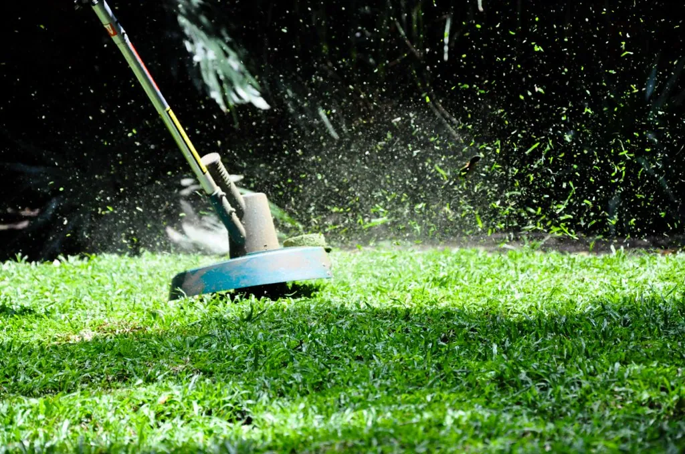

Keeping the outside of a home tidy is mostly a matter of a few sensible habits: mowing high, trimming neatly, handling leaves wisely, and working with the seasons — all at a pace that is kind to your body.

Mowing well
Difficulty: EasyTime: Weekly in season
A tidy yard begins with sensible mowing, and the single best habit is to mow high. Cutting grass too short is the most common mistake there is, inviting weeds, bare patches, and drought stress.
- Set the mower to leave the grass about three to four inches tall.
- Never remove more than a third of the blade's height at once.
- Keep the mower blade sharp so it cuts cleanly rather than tearing.
- Leave the fine clippings on the lawn to feed the soil as they break down.
- Mow when the grass is dry, for a cleaner cut and safer footing.
Safety first: Before mowing, walk the yard and pick up stones, sticks, and toys that a blade could throw. Wear sturdy closed shoes, never reach under a running mower, and switch it off fully before clearing a jam. On a slope, mow across it rather than up and down to keep your footing.
Trimming and edging
Difficulty: EasyTime: A few minutes
A neat edge makes the whole yard look cared-for. A string trimmer handles the grass the mower cannot reach, along fences, walls, and beds.
- Wear eye protection — a trimmer throws grit and debris.
- Trim the grass the mower missed along edges and around obstacles.
- Hold the trimmer at a slight angle for a clean edge along a path or bed.
- Work in short sessions; a trimmer can be tiring on the arms and shoulders.
A tidy edge is the finishing touch that makes the difference between a yard that looks merely mown and one that looks truly cared-for. A few minutes with the trimmer along the paths and beds repays itself in the whole yard looking sharper and more deliberate.
Working in the yard safely
Yard work is healthy, pleasant exercise, but it accounts for a great many avoidable injuries each year, so a little care goes a long way. The hazards are not dramatic — a thrown stone, a slip on wet grass, a strained back, too much sun — but they are real, and a few steady habits keep the whole business safe and enjoyable.
- Dress for it: sturdy closed shoes with good grip, long trousers for trimming, and gloves for anything thorny or rough.
- Protect yourself from the sun — a hat, sunscreen, and water to hand — and avoid the hottest hours of the day.
- Warm up gently and switch tasks now and then, so no one set of muscles takes all the strain.
- Lift with your legs, not your back, and use a wheelbarrow or cart for anything heavy rather than carrying it.
- Stop before you are exhausted; most strains and falls happen when we push on while tired.
Safety first: Be especially careful with any powered equipment. Keep hands and feet well clear of blades, never remove a guard, switch the machine fully off before clearing a jam, and keep children and pets indoors while you work. On a slope, mind your footing, and never mow wet grass, which is slippery underfoot.
Trees, shrubs, and the wider yard
Beyond the lawn, a yard usually holds trees, shrubs, and hedges that want occasional attention. Light pruning of shrubs and hedges — shaping them, removing dead or crossing branches — is well within a confident homeowner's reach with a good pair of loppers and a steady footing on the ground.
Safety first: Leave the big tree work to the professionals. Pruning large branches, anything requiring a chainsaw, and any work that means climbing a tree or working near power lines is genuinely dangerous and belongs to a trained, insured arborist. Every year, people are seriously hurt attempting tree work that should have been hired out. When a job takes you off the ground or calls for a chainsaw, pick up the phone, not the saw.
For the shrubs and hedges you can safely reach, prune at the right season — most spring-flowering shrubs just after they bloom, most others in late winter — and stand back often to check your shape. Keep your blades sharp and clean, and never take on more height or reach than you can manage with both feet planted firmly on the ground.
Leaf and seasonal cleanup
Difficulty: EasyTime: Seasonal
Fallen leaves left in a thick mat can smother a lawn, but they are also a free gift to the garden. A little cleanup keeps things healthy and tidy.
- Rake or mow over light leaf cover; shredded leaves make a wonderful free mulch and compost.
- Clear thick piles off the lawn before winter so the grass can breathe.
- Keep leaves out of gutters and off paths, where they clog drains and grow slippery.
- A leaf rake is gentler on the back than bending; take breaks and switch hands.
Tip: Shredded autumn leaves are one of the best free materials a gardener has. Pile them to rot down into rich leaf mold, or spread them as a winter mulch over beds. There is no need to bag and bin this small autumn treasure when the garden will happily take it back and turn it into next year's good soil.
Choosing a mower that suits you
The right mower makes yard work far lighter, and the best choice depends on your yard and your strength rather than on the biggest or most powerful machine. For a small, flat lawn, a simple push mower — including the quiet, cordless battery kind — is often ideal: light, easy to start, and nothing to trip over. Battery mowers in particular have come a long way and spare you the pull-cord, the fumes, and the fuel.
For a larger yard, a self-propelled mower that drives itself forward saves a great deal of effort, and for a very large plot a ride-on may be worth the cost. Whatever you choose, look for easy height adjustment, comfortable handles, and a weight you can manage, and try before you buy if you can. A machine that is too heavy or too hard to start is one you will come to dread; one that suits you turns a chore into a pleasant hour outdoors.
Watering, deeply and seldom
A lawn wants deep, infrequent watering rather than a daily sprinkle, which trains the roots to reach down and fend for themselves. Aim for about an inch of water a week, counting rainfall, delivered in one or two good soakings rather than many light ones.
- Water early in the morning, before the heat, so little is lost to evaporation and the grass dries by evening.
- To measure an inch, set an empty tuna can on the lawn and stop watering when it fills.
- In high summer, let the lawn rest; most grasses go naturally brown and dormant in heat and green up again with cooler, wetter weather.
- A sprinkler on a simple timer saves you standing with a hose and makes early watering effortless.
Tip: Over-watering is as harmful as under-watering, encouraging shallow roots, disease, and weeds. When in doubt, water less often but more deeply, and let the weather do as much of the work as it will.
Keeping paths and drives tidy and safe
The hard surfaces around a home deserve attention too, both for looks and for safety. Weeds in the cracks of a path or drive are easily dealt with, and keeping these surfaces clear of moss and leaves prevents the slips and falls that are so common and so serious.
- Pull or scrape weeds from cracks while they are small; a kettle of hot water or a simple weeding knife does the job without chemicals.
- Sweep leaves off paths promptly in fall, as wet leaves grow dangerously slippery.
- Scrub away green algae and moss from shaded paving, which can be treacherous underfoot when damp.
- In winter, keep walkways clear of ice and snow, and keep a little grit or sand handy for icy mornings.
The seasonal yard
Like the garden, the yard has a rhythm worth following. In spring, clear winter debris, give the first mow, and tidy the edges. Through summer, mow high and water the lawn deeply but seldom. In fall, rake the leaves, give a final mow, and clear the gutters before the cold. In winter, rest, keep paths clear of ice, and let the yard sleep until spring calls it awake again.
None of this need be a burden. Break the jobs into short, pleasant sessions, use the tools that are kindest to your body, and accept help with the heavy work. A yard kept with small, regular attention stays tidy with far less effort than one left to run wild and then wrestled back. Think of it as a series of pleasant short jobs spread across the year rather than one daunting marathon, and it never becomes a burden. And when you would rather grow than groom, the Container Gardening guide brings the pleasures of a garden up onto the patio, no digging required.